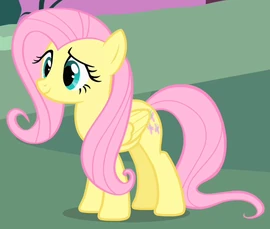
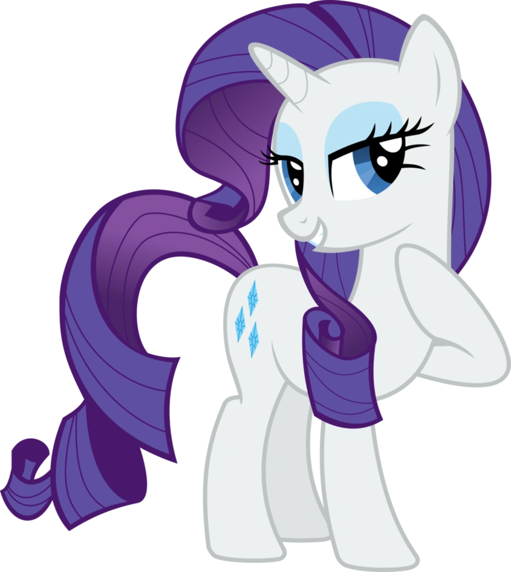

My Little Pony
| Pony |
Descripción |
Raza |
Ocupación |
Cutie Mark |
Imagen Pony |
| Twilight Sparkle |
Es una pony alicornio princesa la cual gobierna equestria con ayuda se sus amigas |
Temporada 1-3 Unicornio; Final 3° temporada y 4º temporada Alicornio;Humana (EG) |
Bibliotecaria; Ex-estudiante de la Princesa Celestia;Princesa de la Amistad; Directora y maestra de la Magia en la Escuela de la Armonía (8° temp.) |
 |
 |
| Fluttershy |
Es una pony pegaso callada y tímida que su principal objetivo es cuidar a la naturaleza y a los animales |
Pegaso; Vampiro en el episodio Bats! |
Cuidar a los animales, entre ellos a Angel; Maestra de la Amabilidad en la Escuela de la Amistad (8° temp.) |
 |
 |
| Rainbow Dash |
Es una pony pegaso leal que se dedica a controlar el clima y aspira a ser miembro del equipo de vuelo más famoso de la ciudad "Los Wonderbolts" |
Pegaso |
Despejar el cielo en Ponyville; Estudiante en la Academia de los Wonderbolts; Miembro de las Reservas de los Wonderbolts; Wonderbolt; Maestra de la Lealtad en la Escuela de la Amistad |
 |
 |
| Applejack |
Es una pony trabajadora en todos los aspectos, tiene una granja en la cual ella se dedica a cultivar y cuidar las manzanas de su familia |
Terrestre |
Granjera;Maestra de la Honestidad en la Escuela de la Amistad (8° temp.) |
 |
 |
| Rarity |
Es una pony unicornio glamorosa con mucho estilo y clase, siempre estando a la moda, con lo ultimo en tendencia |
Unicornio; Terrestre durante el episodio El Regreso de la Armonía, Parte 1 |
Diseñadora de moda; Maestra de la Generosidad en la Escuela de la Amistad |
 |
 |
| Pinkie Pie |
Es una pony con demasiada energía que ama hacer festejos para cualquier tipo de celebracion, es feliz e hiperactiva todo el tiempo |
Terrestre;Humana (EG) |
Organizadora de fiestas ;Pastelera de Sugarcube Corner; Embajadora de la Amistad para Yakyaquistán; Maestra de la Risa en la Escuela de Amistad (8° temp) |
 |
 |